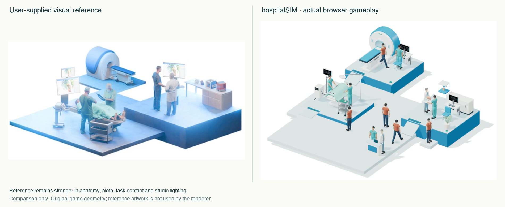

hospitalSIM v0.4 adds doorway walking, corrected visit timing, clearer traffic reservations, revised original humans and an optional REPLISOME science workstation. It remains a vertical slice below the supplied reference in several visible ways, not production-ready software.
Tests, measurements and remaining gaps · Model and timing definitions · Art, camera, lighting and materials · Unvalidated evaluation draft · Portfolio integration plan
Actual full patient-loop gameplay at3×. Matching simulation-state log.

iPhone / device check and local result export. No real-device result is claimed until tested.
Substantial AI assistance covered design, implementation, modeling, animation and testing. No clinician/educator involvement, learner study, effectiveness or studio interest is invented. The original REPLISOME route and assets are preserved; hospitalSIM becomes the lead Playground project. Unrelated portfolio content is preserved.